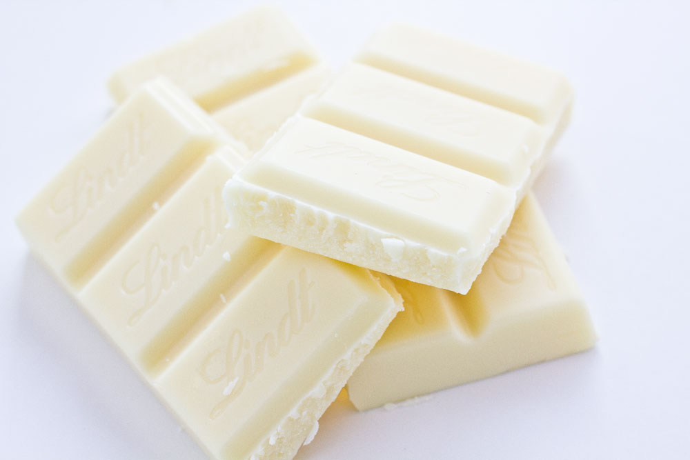

Британската късокосместа котка е порода домашна котка произхождаща от Великобритания.
Мъжките екземпляри тежат от 5-10 кг, а женските 5-7 кг. Има къса гъста козина и също
така гъст подкосъм.
Russian Blue
Руската синя котка е късокосместа порода домашна котка, произхождаща от Русия, близо до
град Архангелск.
[1]
В Англия, където е и призната, е донесена около 1960 от архангелски
моряци.
Dogs
Huskey
Сибирското хъски е порода куче, която произлиза от източната част на Сибир.
Сибирските хъскита са първоначално селектирани от чукчите в североизточна Азия,
по-късно внесени от търговци в Аляска, САЩ и Канада.
Foods
Chocolates
Dark Chocolate
Натуралният шоколад е с високо съдържание на какао. В зависимост от видът, може да
варира от 70 до над 90%.
White Chocolate

Белият шоколад е производно на шоколада, което официално не може да бъде наречено
шоколад. Характеризира се с бледо жълт цвят, подобен на слонова кост.